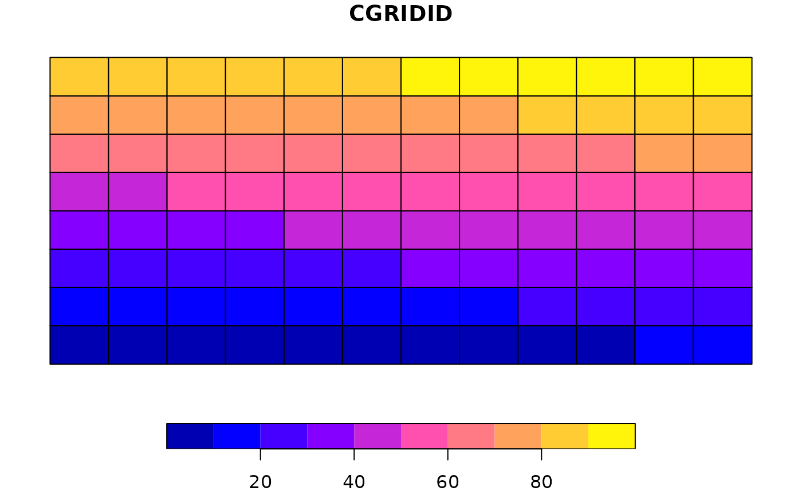
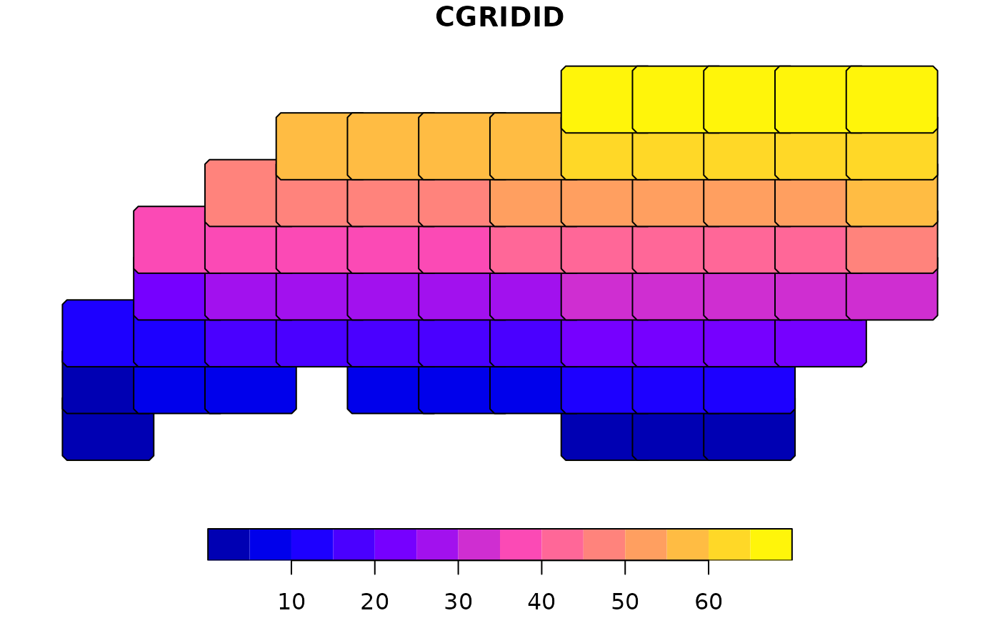

Get a set of computational grids
par_make_gridset.RdUsing input points, the bounding box is split to the predefined numbers of columns and rows. Each grid will be buffered by the radius.
Usage
par_make_gridset(
input,
mode = c("grid", "grid_advanced", "grid_quantile"),
nx = 10L,
ny = 10L,
grid_min_features = 30L,
padding = NULL,
unit = NULL,
quantiles = NULL,
...
)Arguments
- input
sf or Spat* object.
- mode
character(1). Mode of region construction. One of
"grid"(simple grid regardless of the number of features in each grid)"grid_advanced"(merging adjacent grids with smaller number of features thangrid_min_features). The argumentgrid_min_featuresshould be specified."grid_quantile"(x and y quantiles): an argumentquantilesshould be specified.
- nx
integer(1). The number of grids along x-axis.
- ny
integer(1). The number of grids along y-axis.
- grid_min_features
integer(1). A threshold to merging adjacent grids
- padding
numeric(1). A extrusion factor to make buffer to clip actual datasets. Depending on the length unit of the CRS of input.
- unit
character(1). The length unit for padding (optional). units::set_units is used for padding when sf object is used. See units package vignette (web) for the list of acceptable unit forms.
- quantiles
numeric. Quantiles for
grid_quantilemode.- ...
arguments passed to the internal function
Value
A list of two,
original: exhaustive and non-overlapping grid polygons in the class of inputpadded: a square buffer of each polygon inoriginal. Used for computation.
See also
par_cut_coords, par_merge_grid
Other Parallelization:
par_cut_coords(),
par_fallback(),
par_grid(),
par_group_grid(),
par_hierarchy(),
par_make_grid(),
par_merge_grid(),
par_multirasters()
Examples
# data
library(sf)
ncpath <- system.file("shape/nc.shp", package = "sf")
nc <- read_sf(ncpath)
nc <- st_transform(nc, "EPSG:5070")
# run: nx and ny should strictly be integers
# In the example below, nx is 12L, not 12.
nc_comp_region <-
par_make_gridset(
nc,
mode = "grid",
nx = 12L, ny = 8L,
padding = 10000)
par(mfcol = c(1, 2))
plot(nc_comp_region$original)

plot(nc_comp_region$padded)
